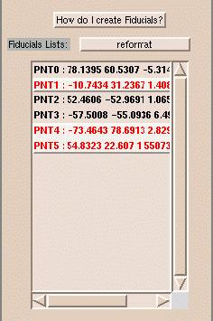

Fiducial points are little diagonal glyphs that can be added on any volume in the 2D slice windows or any models in the 3D windows. Fiducial points can be used for measuring distances, angles or for reformatting or registration.
Here are basics about Fiducials for Users:
NOTE: it is important to press 'p' and not 'P', 'd' and not 'D' and 'q' and not 'Q'. "
Here are basics about Fiducials for Developpers:
Init procedure if it is not already there:
# Define Dependencies
set Module($m,depend) Fiducials
set MyCoolProgram(fiducialsListCreated) 0
set m MyCoolProgram
set Module($m,procEnter) MyCoolProgramEnter ,
MyCoolProgramEnter is the procEnter procedure for the "MyCoolProgram" module). ).
if {$MyCoolProgram(fiducialsListCreated) == 0} {
set MyCoolProgram(fiducialsListCreated) 1
FiducialsCreateFiducialsList "default" "MyCoolList"
}
FiducialsSetActiveList "MyCoolList"
You should always use the "default" type of Fiducials unless you want to define your own type of Fiducials inside the MRML Fiducials File (if you want them to have a different look for example, see the "endoscopic" type for example).
|
Here is the Fiducial panel  |
FiducialsGetPointIdListFromName $list
This returns a list of point ids that belong to the Fiducial list with the name $list.
FiducialsGetPointCoordinates $pid
This returns a list of 3 coordinates (x,y,z)
FiducialsGetSelectedPointIdListFromName $list
This returns a list of only the selected point Ids for the list with the name $name.
FiducialGetAllSelectedPointIds
This returns a list of all selected point Ids.